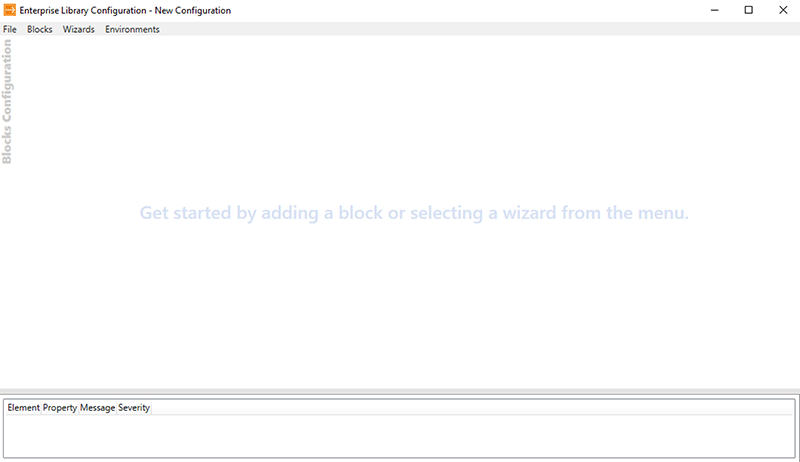

Overview
DevAccelerate Core is the core library of the DevAccelerate Framework for .NET applications. Every other DevAccelerate library depends on DevAccelerate Core. The library provides some of the core functionalities such as configuration management, caching, exception handling, and logging.
DevAccelerate in general does not impose any particular implementation and it is certainly true in terms of caching, logging, and exception handling. DevAccelerate uses a well-established provider model that can be used to plug other implementations and libraries such as Microsoft Enterprise Library. The obvious benefit of this flexibility is that you can switch to any other underlying framework such as Apache Log4Net by simply making a configuration change without making any modifications to your code whatsoever.
Code Documentation
We have written MSDN-style comprehensive code documentation (http://core.devaccelerate.com/docs) that you can use as a reference for DevAccelerate Core.
Installing DevAccelerate Core
You can install DevAccelerate Code by using NuGet Package Manager. Simply follow these steps:
- Go to Tools > NuGet Package Manager > Package Manager Console.
-
Install DevAccelerate Core by executing the following command one-by-one:
Install-Package DevAccelerateCore
If you are planning to use Microsoft Enterprise Library's Logging and Exception Handling along with DevAccelerate Core then you would need to install the their plugin packages as well:
Install-Package DevAccelerateCoreLoggingMsel Install-Package DevAccelerateCoreExceptionHandlingMsel
Note: Installation of DevAccelerateCoreLoggingMsel and DevAccelerateCoreExceptionHandlingMsel NuGet packages will automatically install all the Microsoft Enterprise Library dependencies in your project.
Boostrapping DevAccelerate Core
The best place to bootstrap DevAccelerate Core in an ASP.NET web application is the Application_Start event in the Global.asax file. The reason is simple: DevAccelerate Core needs to be bootstrapped (or so-called initialized) only once in the application lifecycle.
At the top of the Global.asax file, import the following namespaces:
using Ejyle.DevAccelerate.Core; using Ejyle.DevAccelerate.Core.Caching; using Ejyle.DevAccelerate.Core.Configuration; using Ejyle.DevAccelerate.Core.Exceptions; using Ejyle.DevAccelerate.Core.Logging;
In the Application_Start method, write the following code:
/* Create an instance of the DefaultConfigurationSource class. This class represents the default application configuration file such as web.config in a web application. */ var configurationSource = new DefaultConfigurationSource(); /* Setup the configuration for DevAccelerate caching. */ DaApplicationContext.SetupConfiguration("daCachingConfiguration", configurationSource); /* Setup the configuration for DevAccelerate exception handling. */ DaApplicationContext.SetupConfiguration ("daExceptionHandlingConfiguration", configurationSource); /* Setup the configuration for DevAccelerate logging. */ DaApplicationContext.SetupConfiguration ("daLoggingConfiguration", configurationSource);
You would need to bootstrap the Microsoft Enterprise Library in a similar fashion if you want to take advantage of the library as an underlying framework for logging and exception handling. If that is the case, you need to add the following code:
... using Microsoft.Practices.EnterpriseLibrary.Common.Configuration; using Microsoft.Practices.EnterpriseLibrary.ExceptionHandling; using Microsoft.Practices.EnterpriseLibrary.Data; using Microsoft.Practices.EnterpriseLibrary.Logging; ... DatabaseFactory.SetDatabaseProviderFactory(new DatabaseProviderFactory()); var mselConfig = ConfigurationSourceFactory.Create(); var mselExPolFac = new ExceptionPolicyFactory(mselConfig); Logger.SetLogWriter(new LogWriterFactory(mselConfig).Create()); ExceptionPolicy.SetExceptionManager(mselExPolFac.CreateManager());
Defining Configuration in the Web.config File
Before you can write the actual code for caching, logging, and exception handling, you need to define the basic configuration of DevAccelerate Core in the web.config file. Keep in mind, DevAccelerate especially the Core library is configuration-centric and you need to specify what implementation you want for which functionality. The following is example of how you would do it for caching, logging and exception handling:
... <configSections> <section name=”daCachingConfiguration” type=”Ejyle.DevAccelerate.Core.Caching.CachingConfigurationSection, Ejyle.DevAccelerate.Core” /> <section name=”daExceptionHandlingConfiguration” type=”Ejyle.DevAccelerate.Core.Exceptions.ExceptionHandlingConfigurationSection, Ejyle.DevAccelerate.Core” /> <section name=”daLoggingConfiguration” type=”Ejyle.DevAccelerate.Core.Logging.LoggingConfigurationSection, Ejyle.DevAccelerate.Core” /> </configSections> ... <daCachingConfiguration type="Ejyle.DevAccelerate.Core.Caching.DefaultCacheManager, Ejyle.DevAccelerate.Core" /> <!-- Implement MSEL plugins for exception handling and logging --> <daExceptionHandlingConfiguration type="Ejyle.DevAccelerate.Core.ExceptionHandling.Msel.MselExceptionManager, Ejyle.DevAccelerate.Core.ExceptionHandling.Msel" /> <daLoggingConfiguration type="Ejyle.DevAccelerate.Core.Logging.Msel.MselLogManager, Ejyle.DevAccelerate.Core.Logging.Msel" /> ...
Writing configuration for Microsoft Enterprise Library components is relatively easier if you use its configuration tool (EntlibConfig.exe):

For a complete walkthrough of how to use the configuration tool, you should read through this article https://msdn.microsoft.com/en-in/library/ff664633(v=pandp.50).aspx.
Caching
You can add an object of any type to cache along with a unique key. A key can be any arbitary string as long as its unique in the cache for a given object. Once you add an object to cache, you can retrieve it anytime after that.
In DevAccelerate Core, you create an instance of the ICacheManager type by calling the CreateCacheManager method of the DaApplicationContext class. Once you have a cache manager object, you can call its members to work with the underlying caching framework.
Add an Object to Cache
You call the Add method to add an object to the cache:
var employee = new Employee();
...
var cacheManager = DaApplicationContext.CreateCacheManager();
cacheManager.Add("employee_" + employee.Id, employee);
Retrieve an Object from Cache
You can call the GetData method to retrieve an object from cache:
var cacheManager = DaApplicationContext.CreateCacheManager();
var employee = cacheManager.GetData("employee_" + employeeId));
Check if a Key Exists in Cache
You can call the Contains method to check if a key exists in cache:
var cacheManager = DaApplicationContext.CreateCacheManager();
if(cacheManager.Contains("employee_" + employeeId))
{
// Do something
}
Clear Cache
You can call the Flush method to clear cache:
var cacheManager = DaApplicationContext.CreateCacheManager(); cacheManager.Flush();
Exception Handling
To handle exceptions in DevAccelerate Core is very simple. Firstly, you need to create an instance of the IExceptionManager type and secondly invoke its HandleException method:
try
{
// Code that can potentially throw an exception
}
catch(Exception ex)
{
var exceptionManager = DaApplicationContext.CreateExceptionManager();
exceptionManager.HandleExpcetion(ex);
}
Logging
To write log messages in a unified fashion regardless of all the under-the-hood complexities that can quickly pile up depending upon what the needs are, you just need to create an instance of the ILogManager type and pass an ILogMessage object to the Write method:
var logManager = DaApplicationContext.CreateLogManager();
var msg = new LogMessage()
{
Title = "some title",
Priority = 3,
Text = "Some text"
};
var categories = new List();
categories.Add("General");
msg.Categories = categories;
logManager.Write(msg);